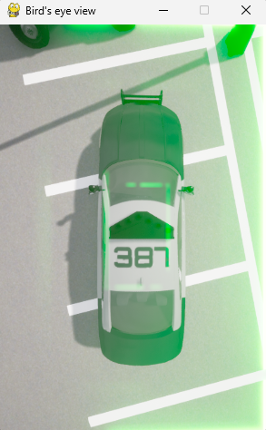

Capture and calibration workflow
Development screenshots showing bird’s-eye-view generation, camera tuning, and captured image sequences. Select any image to inspect the full screenshot.

Bird’s-eye vehicle view — top-down capture preview

Stitched camera preview — alignment and vehicle masking

Calibration tools — camera pose, perspective warping, and offsets

Captured image sequence — varied parking scenes and transforms file